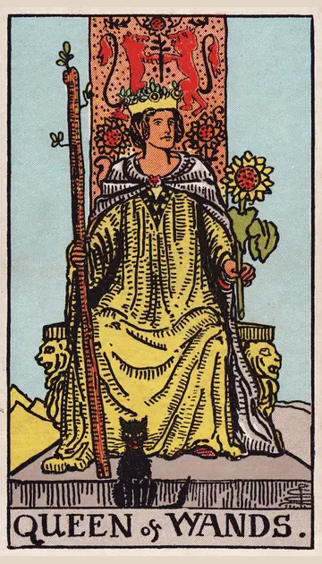

正位置ワンドのクイーンの正位置
キーワード：明るさ・自信・魅力
恋愛
明るく自信に満ちた魅力が、人を引きつける時です。
相手の気持ちあなたの明るさと自信に、惹かれているようです。
この先魅力が伝わり、恋が実りそうです。
アドバイス自分の魅力を信じて、明るく接しましょう。
気をつけること自分中心になりすぎないように。
この先魅力が伝わり、恋が実りそうです。
アドバイス自分の魅力を信じて、明るく接しましょう。
気をつけること自分中心になりすぎないように。
人間関係
周りを明るくし、人が集まってくる時です。
相手の気持ちあなたといると元気が出ると感じているようです。
この先人気者として、周りに頼られそうです。
アドバイス周りを励まし、明るい雰囲気をつくりましょう。
気をつけること仕切りすぎて、周りを疲れさせないように。
この先人気者として、周りに頼られそうです。
アドバイス周りを励まし、明るい雰囲気をつくりましょう。
気をつけること仕切りすぎて、周りを疲れさせないように。
仕事・学業
自分らしさを発揮して、リーダーシップをとれる時期です。
この先自分らしいやり方で、成果を出せそうです。
アドバイス自分の意見を、堂々と伝えましょう。
気をつけること何でも自分でやろうとしすぎないように。
アドバイス自分の意見を、堂々と伝えましょう。
気をつけること何でも自分でやろうとしすぎないように。
お金
自信を持って、お金を扱える時です。
この先満足できるお金の使い方ができそうです。
アドバイス自分の働きに見合う報酬を、求めてみましょう。
気をつけること気前がよすぎて、使いすぎないように。
アドバイス自分の働きに見合う報酬を、求めてみましょう。
気をつけること気前がよすぎて、使いすぎないように。
生活
明るく、自分らしく暮らせる時です。
この先毎日が楽しくなりそうです。
アドバイス好きなものを、部屋に飾ってみましょう。
気をつけること張り切りすぎて、疲れないように。
アドバイス好きなものを、部屋に飾ってみましょう。
気をつけること張り切りすぎて、疲れないように。
今日の運勢
堂々と、自分らしく過ごせる日です。
この先楽しい出来事がありそうです。
アドバイス好きな服や小物で、気分を上げましょう。
気をつけること張り切りすぎて、空回りしないように。
アドバイス好きな服や小物で、気分を上げましょう。
気をつけること張り切りすぎて、空回りしないように。
逆位置ワンドのクイーンの逆位置
キーワード：嫉妬・わがまま・自信のなさ
恋愛
嫉妬やわがままが、出やすい時です。
相手の気持ちあなたとの関係で、嫉妬や不安を感じているようです。
この先自信を取り戻せば、関係も明るくなりそうです。
アドバイス不安な気持ちは、責める言葉ではなく素直に伝えましょう。
気をつけること嫉妬から、相手を束縛しないように。
この先自信を取り戻せば、関係も明るくなりそうです。
アドバイス不安な気持ちは、責める言葉ではなく素直に伝えましょう。
気をつけること嫉妬から、相手を束縛しないように。
人間関係
感情的になり、周りとぶつかりやすい時です。
相手の気持ちあなたのことが気になるのに、素直になれないようです。
この先素直になれば、周りとの関係が整いそうです。
アドバイス感情が高ぶったら、少し離れて落ち着きましょう。
気をつけること気分で態度を変えないように。
この先素直になれば、周りとの関係が整いそうです。
アドバイス感情が高ぶったら、少し離れて落ち着きましょう。
気をつけること気分で態度を変えないように。
仕事・学業
自信を失い、力を出し切れない時期です。
この先本来の力を、また発揮できそうです。
アドバイス自分の強みを書き出して、思い出しましょう。
気をつけること人の成功を妬まないように。
アドバイス自分の強みを書き出して、思い出しましょう。
気をつけること人の成功を妬まないように。
お金
見栄や気分で、お金を使いやすい時です。
この先落ち着けば、使い方が整いそうです。
アドバイス人と比べない買い物を、意識しましょう。
気をつけること張り合う気持ちからの出費に気をつけて。
アドバイス人と比べない買い物を、意識しましょう。
気をつけること張り合う気持ちからの出費に気をつけて。
生活
気分にムラが出て、暮らしが乱れやすい時です。
この先気分が落ち着けば、整いそうです。
アドバイス自分をいたわる時間をとりましょう。
気をつけることイライラを、家族にぶつけないように。
アドバイス自分をいたわる時間をとりましょう。
気をつけることイライラを、家族にぶつけないように。
今日の運勢
気分にムラが出やすい日です。
この先気分が晴れていきそうです。
アドバイス自分を大切にする時間をとりましょう。
気をつけることイライラを人にぶつけないように。
アドバイス自分を大切にする時間をとりましょう。
気をつけることイライラを人にぶつけないように。
このページの文章は、アプリ「ひとやすみタロット」の結果に使っている文章です。アプリでは、あなたの相談や、カードが出た位置（今の状況・これからの流れ・アドバイス）に合わせて、この中から文章を選びます。逆位置の読み方は逆位置のことをご覧ください。
「ワンドのクイーン」が出たら、あなたの相談ではどう読む？
アプリでは、質問への答えに合わせて、カードの言葉をあなたの相談に合わせて届けます。
Android 対応・会員登録なし